The Wrangler NFR is the season-ending championship event for the Professional Rodeo Cowboys Association and the Women’s Professional Rodeo Association and is widely acknowledged to be the world’s premier rodeo. Held every December since 1985 at the Thomas & Mack Center in Las Vegas, the Wrangler NFR is ProRodeo’s richest and most prestigious rodeo, and it showcases the very best cowboys, barrel racers and livestock in the world.
2019 WNFR Barrel Racers Profiles
Jennifer Sharp: Jennifer Sharp – Richards, Texas ($91,754) First-time WNFR qualifier
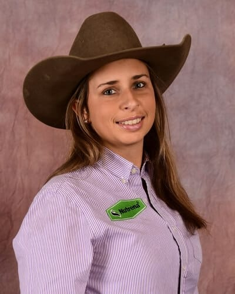
Jennifer Sharp started the 2019 season with a bang, winning second at Odessa, Texas, and then taking the championship at the National Western Stock Show & Rodeo in Denver in January. Riding Six French Smooches “Smooch”, she won nearly $12,000. Smooch, a six-year-old palomino mare is owned by Terri Lamp of Cat Springs, Texas.
Hailey Kinsel: Hailey Kinsel – Cotulla, Texas ($148,867) 3-time WNFR qualifier 2018 World Champion
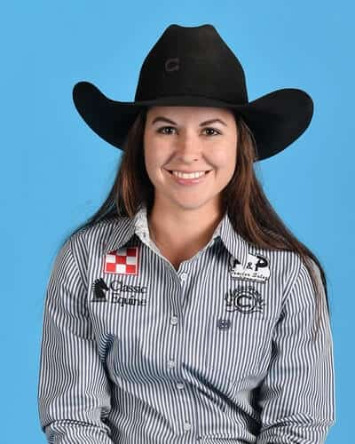
It wasn’t that long ago that no one had heard of Hailey Kinsel, but she and her great mare DM Sissy Hayday “Sister” have not only become superstars in the barrel racing world, their rise to success in the rodeo arena has given the Kinsel name notoriety.
It started in 2017 when they won RFD-TV’s The American. Then came a college championship for Texas A&M University and their first trip to the Wrangler National Finals Rodeo where they set an arena record and an earnings record.
Stevi Hillman: Stevi Hillman – Weatherford, Texas ($105,335) 4-time WNFR qualifier
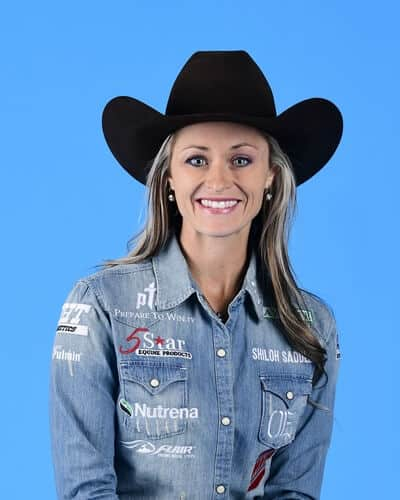
For any barrel racer to achieve greatness, it takes a team. For Stevi Hillman, it has also taken a Truck.
Stevi is on her way to her fourth Wrangler National Finals Rodeo and while she has ridden several different horses, there has been one that has been instrumental in her success. That horse is 12-year-old gelding Cuatro Fame, “Truck.”
There are several constants in her life. Her faith in God, her husband Ty, and her desire to win. Truck has been right there too. This year he has won the majority of her $105,335 during the regular season putting her in sixth place to start the NFR.
Stevi first qualified for the NFR in 2016. That same year, her husband, Ty Hillman, started his own personal coaching business – Prepare to Win. That has become a way of life for this duo as they listen to motivational speakers as they drive, try to eat healthy and get rest on the road and put their faith to good use.
Nellie Miller: Nellie Miller – Cottonwood, Calif. ($154,611) 4-time WNFR qualifier 2017 World Champion
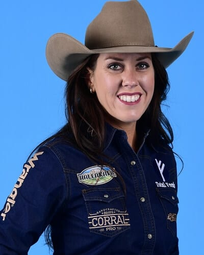
Nellie Miller not only has the distinction of entering her fourth Wrangler National Finals Rodeo in first place, she did it by entering fewer rodeos than any of her other competitors.
It’s not just because she has a super star horse in Rafter W Minnie Reba, the 11-year-old mare that everyone knows as Sister. Sister was raised and trained by Nellie’s father Sam Williams and is a full sister to the horse that Nellie competed on at her first NFR.
Maybe it is because they raised and trained the mare, and maybe it’s just because of the partnership they have formed, but Nellie has figured out exactly what rodeos Sister likes and where they will excel. Needless to say, they have a high winning percentage. They earned $154,611 during the regular season and did that at 28 rodeos.
Ericka Nelson: Ericka Nelson – Century, Fla. ($93,433) First-time WNFR qualifier
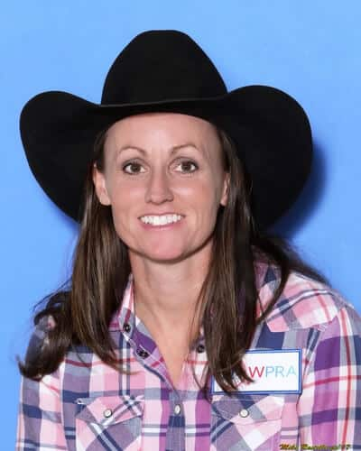
Ask Ericka Nelson about the learning curve in rodeo. It took her three years to get to the Wrangler National Finals Rodeo and it wasn’t from lack of effort or winning.
Ericka joined the WPRA in 2001. She went to circuit rodeos and stayed pretty close to home in Century, Florida. She rode outside horses and did some training. One of the horses that came to her in those days was PC Cash “Bud.” He came to Ericka as a three-year-old, she started training him and taking him to futurities. Because she didn’t want to travel and go “out west” but wanted Bud to have those opportunities he was sold.
Then Goodfrenchmanfriday “Friday” came into her life and she couldn’t turn down the opportunity to ride him. She saw it as an opportunity to show the rest of the world the quality of horses there are in Florida, so she hit the road.
Brittany Pozzi Tonozzi: Brittany Pozzi Tonozzi – Lampasas, Texas ($105,503) 13-time WNFR qualifier 2-time World Champion
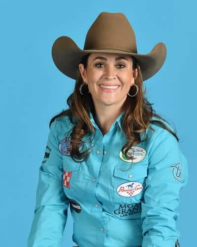
Brittany Pozzi-Tonozzi just might have a horse problem. It’s a self-proclaimed part of her barrel racing addiction.
That addiction has led to 13 Wrangler National Finals Rodeo qualifications, well over $2 million in career earnings and two world championships. It’s also developed her horsemanship as she has ridden so many different horses and gained experience and knowledge from each one.
Her love of the sport led to ventures outside of the arena starting a breeding business. She and her husband Garrett Tonozzi have about 50 horses in their care and do a large percentage of the work themselves.
Add a two-year-old daughter (Tinlee born March of 2017) and their lives have to be nothing short of chaotic. Even with the chaos, Brittany has managed to travel coast to coast, earn $105,503 during the regular season and will start this year’s NFR in fifth place.
On the “Married With Horses” podcast, she told Lane and Jackie Jatzlau that she would really be happy if she won fifth place at every rodeo she went to. All of those fifth-place checks would add up and with going to 67 rodeos would likely get someone to the NFR.
Emily Miller: Emily Miller – Weatherford, Okla. ($98,145) First-time WNFR qualifier
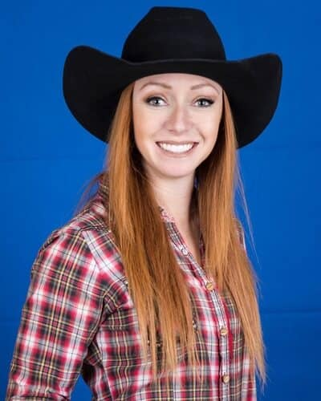
Emily Miller grew up on a farm in Kansas with family that wasn’t involved with horses. Her babysitter was a barrel racer and that started an interest that is not only a lifelong passion for Emily, it forged a lifelong relationship with that babysitter, Jana (Wehkamp) Turner.
Emily’s parents supported her love of horses and competing in rodeos but they also were realistic about the endeavors. She competed in five events in high school and was the Kansas all-around champion on three occasions.
When she was a sophomore in high school her parents bought her a horse for the last time. They were still supportive but knew that she needed to learn to make it on her own and treat rodeo like a business.
She got rodeo scholarships for college and started out at the nearby Garden City Community College. Then she transferred to Southwestern Oklahoma State University in Weatherford and got her dental hygiene degree.
Shali Lord: Shali Lord – Lamar, Colo. ($111,776) 2-time WNFR qualifier
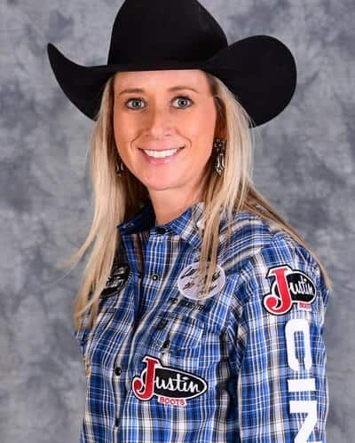
A lot of things have changed since Shali Lord qualified for her first Wrangler National Finals Rodeo in 2005.
While the competition is essentially the same, the NFR payout has nearly doubled going from $5,104,424 to $10,000. Each of the 10 rounds is worth about $12,000 more for winners and the overall NFR champion will earn $27,000 more than the 2005 winner did.
When Shali, from Lamar, Colorado, qualified in 2005, she rode a little bay rocket, SX Docs Slider “Slider” that either got her to the pay window or hit a barrel. It was exciting to watch and that duo stole the hearts of many fans. She ended up third in the world with $143,348. This year she enters the competition fourth in the world with $111,776, just $31,572 less than she won during the whole 2005 season.
Cheyenne Wimberley: Cheyenne Wimberley – Stephenville, Texas ($90,361) 3-time WNFR qualifier
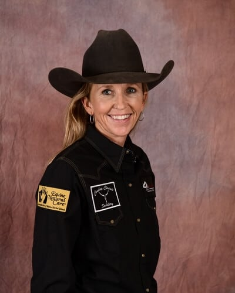
It’s been 20 years since Cheyenne Wimberley ran down the alley at the Thomas & Mack Center to compete in the Wrangler National Finals Rodeo.
The Stephenville, Texas, cowgirl joined the WPRA shortly after hitting double digits. It wasn’t long until she was finding success in the rodeo arena. She filled her permit when she was 11 at the New Mexico State Fair in Albuquerque. The next year she was the Turquoise Circuit Rookie of the Year. She made her first of two consecutive appearances at the NFR in 1998.
After her good horse sustained a career-ending injury, Cheyenne walked away from professional rodeo and its grueling travel schedule. She finished college at Tarleton State University, earned her realtor’s license, became a horse insurance broker and founded Cowboy Classic Saddlery with her parents. She kept her passion for barrel racing, finding her niche training futurity horses.
Ivy Conrado-Saebens: Ivy Conrado – Nowata, Okla. ($93,269) 4-time WNFR qualifier
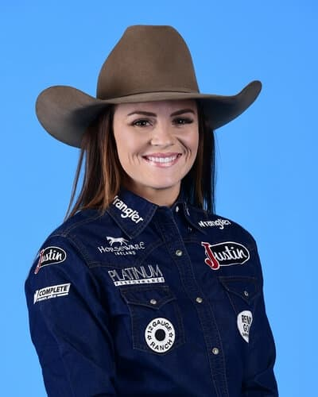
This has been a year of change outside of the rodeo arena for Ivy Conrado-Saebens, but her barrel racing has been on a steady winning path.
She qualified for her fourth consecutive Wrangler National Finals Rodeo in barrel racing and her ten-year-old mare KNFabs Gift of Fame “JLo” was named AQHA Purina Reserve Barrel Horse of the Year for the second straight year. Ivy has $93,269 in regular-season earnings and will start the NFR in 11th place.
Last year she placed in six of the ten rounds at the Thomas & Mack Center, finishing eighth in the average. She won the fifth round, earning the go-round buckle, finished third in the first, sixth and seventh rounds and took sixth in the third and tenth rounds. Ivy won $98,000 to nearly double her regular season winnings and finish the year ranked sixth.
On the personal side, Ivy moved to Nowata, Oklahoma, early this year, where her fiancé Billie Jack Saebens is head trainer for Dixon Flowers Rope Horses.
The couple had a chance to be one of the relatively few husband-wife duos to qualify for the WNFR in the same year. Saebens, a two-time WNFR qualifier in team roping, just missed the cut this year, finishing 16th in the heeler standings, just $2,200 short of the Top 15.
Dona Kay Rule: Dona Kay Rule – Minco, Okla. ($96,507) First-time WNFR qualifier
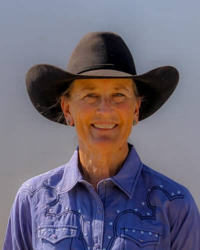
Dona Kay Rule has said that at 60-plus years of age, it’s her turn. She proved that by qualifying for her first Wrangler National Finals Rodeo and doing it on a horse that 20 years ago she probably would have sold.
The Minco, Oklahoma resident doesn’t remember a time when horses weren’t a part of her life or when she didn’t want to go ride. Her father competed in rodeos. She was showing horses. Her father was entered in the team roping at a rodeo and they had to hustle from the horse show to get there. Dona Kay had won ribbons at the horse show but when she saw that her father got money for winning at the rodeo, her focus changed.
She met her husband, John Rule, inside the National Saddlery shop in Oklahoma City. That’s a business that they bought and ran together for years. Dona Kay was also raising two children and training barrel racing horses.
Amberleigh Moore: Amberleigh Moore – Salem, Ore. ($93,059) 4-time WNFR qualifier
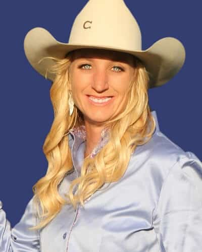
Amberleigh Moore will be making her fourth consecutive trip to the Wrangler National Finals Rodeo. The Salem, Oregon, barrel racer has earned her berth nearly every possible way in those four years.
Her ten-year-old mare CP Dark Moon, who her husband Paul nicknamed Paige, has excelled in the atmosphere at the Thomas & Mack Center
Four years ago, she barely squeaked into the barrel racing field in 15th, but placed in eight of the 10 rounds, winning three. She won almost $187,000 at the finals, finished as reserve world champion and was the high money winner among the barrel racers.
The next year she came into Las Vegas ranked fourth and again won three rounds and placed in two others, winning nearly $120,000 at the WNFR.
Lisa Lockhart: Lisa Lockhart – Oelrichs, S.D. (146,352) 13-time WNFR qualifier 2-time WNFR Champion
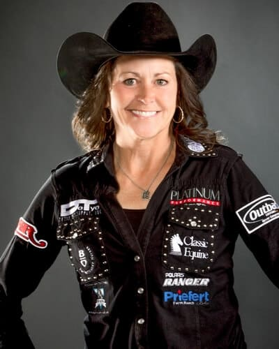
Maybe 13 will be the magic number for South Dakota’s Lisa Lockhart. Her fans are certainly hoping so.
When she rides into the Thomas and Mack Center for the 2019 Wrangler National Finals Rodeo, it will be for her 13th qualification. Much of her success in Las Vegas has been aboard An Oakie With Cash “Louie.”
Louie has been a standout in Las Vegas, taking Lisa to two NFR championships. At 16-years-old, the buckskin gelding has already made 80 trips around the barrels there. That’s 80 right turns and 160 left. Lisa has another buckskin mount that she won a round on at last year’s NFR, Rosas Cantina CC “Rosa,” nine, that looks very similar to Louie. The biggest difference is when they enter the arena, Louie goes right, Rosa goes left.
She also got help this year from an eight-year-old Prime Diamond “Cutter” that took her to her first national title. Last March, with Louie on the inured list and Rosa busy with breeding season, Lisa’s top two horses weren’t available for competition. She was representing the Badlands Circuit at the RAM National Circuit Finals Rodeo (for the 15th time) and had a big decision to make.
Jessica Routier: Jessica Routier – Buffalo, S.D. ($96,507) 2-time WNFR qualifier
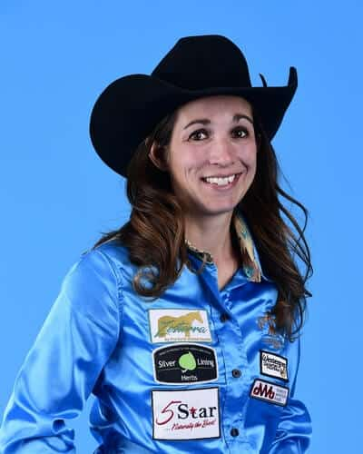
Last year was a learning experience for Jessica Routier that led to her first Wrangler National Finals Rodeo qualification and taught her how to get back there again.
After finishing the 2018 season as the reserve world champion, she got into the lucrative winter rodeos hoping that the palomino mare, Fiery Miss West, that she rides would shine over the winter. “Missy” did just that and before the busy summer run, they had been to 10 rodeos and won nearly $40,000.
Jessica is a planner and with five children, a ranch and plenty of horses to ride, those plans play a critical role in her success. This year she went to 54 rodeos and won $96,507 to finish the regular season in eighth place.
As she schedules those rodeos, she plans the trips so she is never gone from home for more than two weeks. Her husband Riley Routier is part of a ranching family that takes care of 800 head of cattle.
Lacinda Rose: Lacinda Rose – Willard, Mo. ($88,936) First-time WNFR qualifier
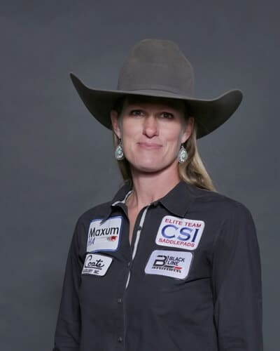
Making her first appearance at the Wrangler National Finals Rodeo is barrel racer Lacinda Rose of Willard, Missouri.
Lacinda qualified for Las Vegas in the 15th (and last) position, but with a $10,000 cushion over 16th-ranked Leia Pluemer. She is the first person from Missouri to qualify in the barrel racing since Amanda Clayman in 2004. They are the only two Missouri barrel racers to compete at the NFR since it moved to Las Vegas 34 years ago. She and team roper Paul Eaves will represent the “Show Me” state this year.
Her main mount has been RR Meradas Real Deal, an 11-year-old product of her father-in-law’s breeding program. Her husband Adam, a PRCA tie-down and team roper, trained Real Deal as a heading horse and Lacinda trained him on barrels.
Adam has qualified for four RAM National Circuit Finals Rodeos and won the Fort Worth Stock Show & Rodeo in January with partner Jett Hillman.
Courtesy of WranglerNetwork.com